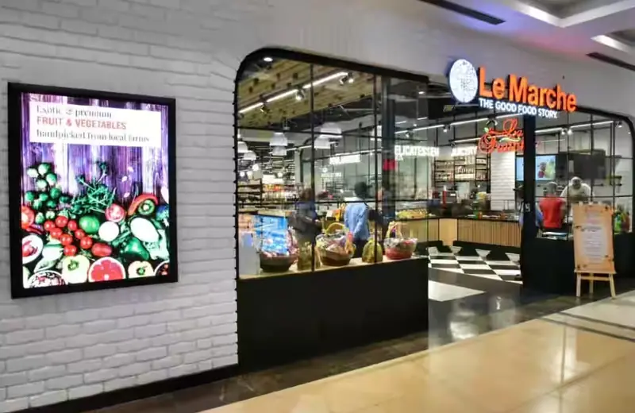

A gourmet grocery store inside Galleria Market. Stop in for specialty ingredients before or after dinner.
Sector 28, DLF Phase IV

A gourmet grocery store inside Galleria Market. Stop in for specialty ingredients before or after dinner.